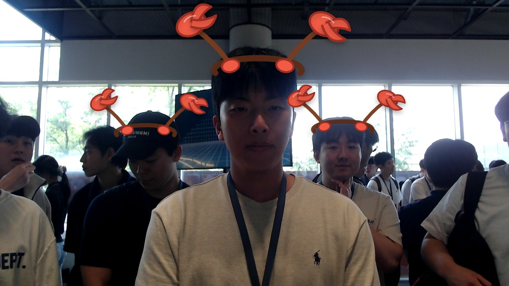

JENSEN HUANG
NVIDIA CEO
MOTTOMAKE WORLD FASTER WITH GPUS
가속 컴퓨팅의 선구자
About me
I lead NVIDIA as CEO, building accelerated computing platforms that help developers, researchers, and companies make the world faster with GPUs.
What I do
AI-written bio
NVIDIA의 CEO로서 GPU를 활용한 가속 컴퓨팅 플랫폼을 구축하며, 개발자와 연구자들이 세상을 더 빠르게 변화시킬 수 있도록 이끌고 있습니다.
AI first impression
차분하고 진지한 분위기